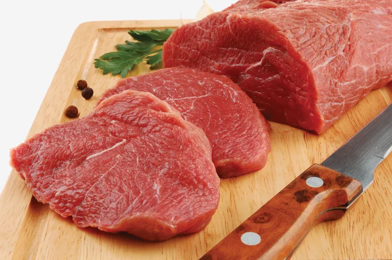

beef recipes
" height="310" width="310">
description
Beef is a versatile and flavorful type of red meat that has been a staple in many cuisines around the world. It is derived from the muscle tissue of cattle and is known for its rich, savory taste and tender texture when cooked properly. Beef can be prepared in a variety of ways, from grilling and roasting to braising and stewing, and is often used in dishes such as steak, burgers, and stews. It is a good source of protein, iron, and other essential nutrients, making it a popular choice for those seeking a nutritious and satisfying meal.
ingredients
- Beef (e.g., chuck, sirloin, or ground beef)
- Salt
- Pepper
- Olive oil or butter
- Onions (optional)
- Garlic (optional)
- Herbs and spices (e.g., thyme, rosemary, paprika)
- Beef broth or stock (optional)
- Red wine (optional)
- Tomatoes (optional, for stews or braises)
preparation (steps)
- Season the beef with salt and pepper.
- Heat a large skillet or pan over medium-high heat and add a small amount of olive oil or butter.
- Brown the beef on all sides, about 2-3 minutes per side, until a nice sear is achieved.
- If using onions and garlic, add them to the pan and sauté until softened, about 5 minutes.
- Deglaze the pan with a splash of beef broth or red wine, if desired, to incorporate the browned bits.
- Reduce the heat to low, cover the pan, and let the beef simmer until it reaches the desired doneness, about 10-15 minutes for medium-rare, or longer for a more well-done texture.
- Remove the beef from the pan and let it rest for a few minutes before slicing or shredding.
- Serve the beef hot, garnished with additional herbs or spices, if desired.